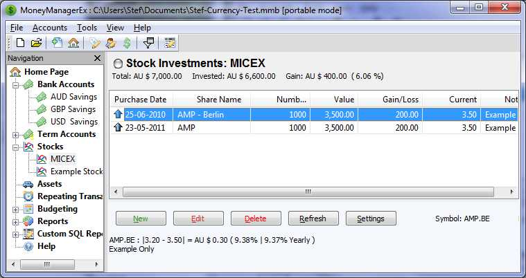
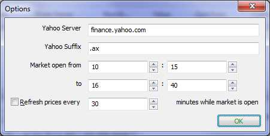

Stock Investments |
With MMEX it is possible to track stocks/mutual fund investments.
To use Stocks, creating a new account
In the Add Account Wizard, set the Type of Account to 'Investment'
This account type is added to the Stocks section of the Navigation Tree.
On the Home Page, the accounts appear as Stocks
Stock accounts appear in their own 'Stock Investments' page.
The Stock Investments Page

On
the Stock Investments page, there are the following buttons
New
Allows
for the addition of new shares.
Edit
Allows
details to be changed
Delete
Allows
shares to be deleted
Refresh
This
allows stock prices to be updated via the internet.
Settings
This
opens a stocks 'Options' dialog.
The New Button
When
you click the 'New' button you get a pop-up box to enter holding
information.
|
|
|
'Display Stock Web Page' Button |
|
|
'Symbol' Text Field |
|
The Refresh Button
If
you have all the symbols set correctly for the individual stock
entries, when you click the 'Refresh' button, the current price will
be updated for each stock you have.
The Settings Button
When
you click the 'Settings' button you get a pop-up box to enter the
option settings.
|
 |
When all your stocks are in the same country, and all being traded at the same Stock Exchange, the Yahoo Suffix can be added as a global setting for all the stocks. This will set the Stock Exchange Market code for all stocks, to allow the use of the Refresh button on the Stock Investments page.
Example: For the Australian Stock Exchange
Using Yahoo quotes, the Stock Exchange suffix is: '.AX'
Using Google quotes, Stock Exchange suffix is: ':ASX'
The Stock Exchange provider can be changed using the menu item: Tools –>Options –> Others